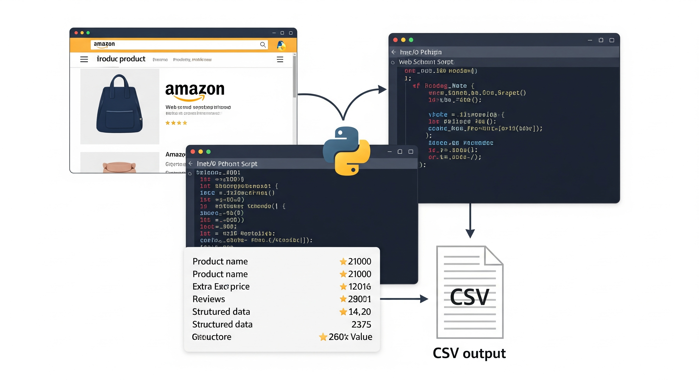
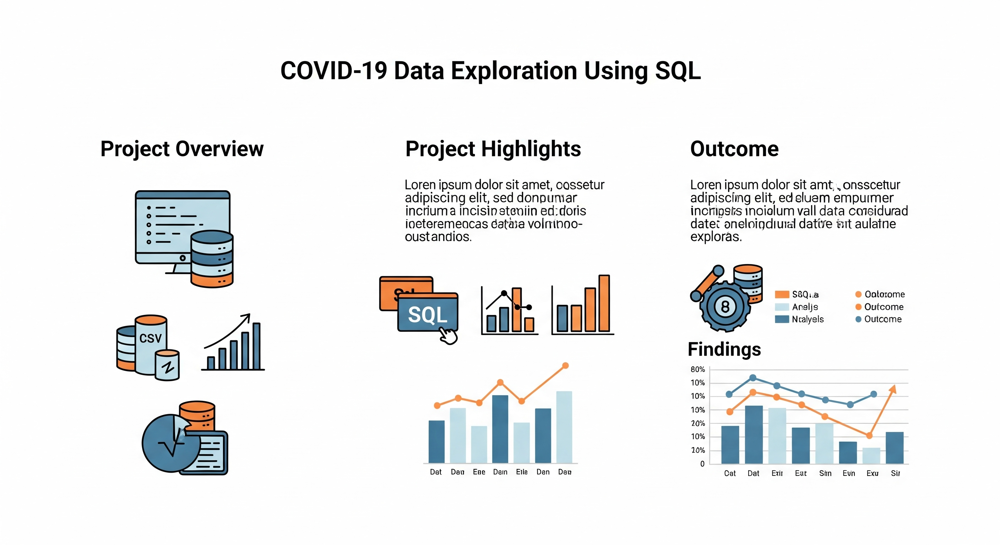
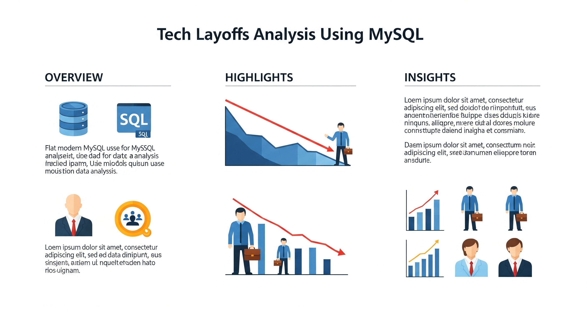
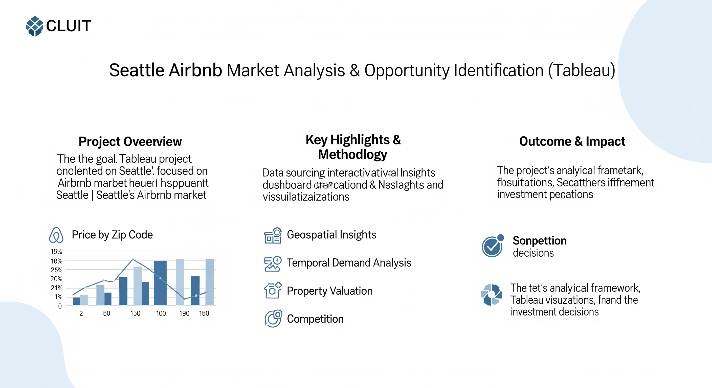

My Projects:
1. Real-World Amazon Website Scraper Using Python:

- Technologies Used: Python, Requests, BeautifulSoup, CSV, Pandas
- Project Overview:
Developed a web scraper in Python to extract real-time data from a live website. The project covers the full scraping process: sending HTTP requests, parsing dynamic HTML content, extracting targeted information, and exporting it in a structured CSV format
- Project Highlights:
- HTTP Requests & HTML Parsing
Utilized Python's requests library to fetch web pages and BeautifulSoup to parse the HTML. Gained a deep understanding of document structure, including tag hierarchies and class identifiers
- Targeted Data Extraction
Focused on capturing specific data points—such as product names, prices, descriptions, or ratings—by navigating the HTML tree and locating relevant elements.
- Data Cleaning & Formatting
Transformed raw text into clean, usable data by removing HTML tags, extra whitespace, and unnecessary characters, and standardized formats for consistency.
- CSV Output Generation
Structured the cleaned data into a tabular format and exported it to CSV, enabling easy import into data analysis tools like Pandas or Excel.
Outcome:
This project demonstrates robust web scraping skills using Python and industry-standard libraries. It reflects the ability to automate data extraction from real websites, handle messy HTML, and deliver clean, ready-to-analyze datasets—ideal for dashboards and further insights.
Full Project Codes here
2. COVID‑19 Data Exploration Using SQL:

- Technologies Used: SQL Server, CSV files, Data Cleaning, Window Functions
- Project Overview:
This project involved exploring real-world COVID‑19 data using SQL to identify patterns and extract meaningful insights. The data, sourced from OurWorldInData, included global statistics on cases, deaths, and vaccinations. The goal was to perform the entire analysis within SQL without relying on external tools, highlighting the power of SQL for data transformation and exploration.
- Project Highlights:
- Preparation:
Imported two separate datasets—one for COVID‑19 cases and deaths, and another for vaccination data—into SQL Server. Structured them into clean, relational tables suitable for analysis.
- Data Cleaning and Filtering:
Handled missing and inconsistent data, filtered out irrelevant rows (such as continent-level summaries), and ensured uniform date and country formats for reliable querying.
- Metric Calculations and Insights:
Calculated total cases, total deaths, death rates relative to population, and infection rates. Identified countries with high case fatality rates and explored how these changed over time.
- Rolling Totals with Window Functions:
Used SQL window functions to calculate cumulative vaccination numbers per country, enabling analysis of how quickly different regions rolled out their vaccine programs.
- Joining Datasets for Combined Analysis:
Merged vaccination and case data to study the relationship between vaccination rates and reductions in daily new cases and deaths.
- Insight Extraction:
Highlighted global patterns such as countries with consistent vaccination growth, those that flattened their case curves after vaccine rollouts, and others with high mortality despite high vaccination levels.
Outcome:
This project demonstrates the use of SQL for complete end-to-end data analysis. It shows proficiency in importing and cleaning large datasets, performing advanced queries, and deriving actionable insights from real-world data. It also reflects strong analytical thinking and the ability to work with complex, time-series datasets directly in SQL.
Full Project Codes here
3. MySQL Layoffs Data Cleaning & Analysis Project:

- Technologies Used: MySQL, SQL Queries, Data Cleaning, Joins, Window Functions
- Project Overview:
Analyzed a real-world dataset containing information about global tech industry layoffs using MySQL. The dataset included details such as company names, industry types, total layoffs, dates, locations, and funding stages. The objective was to clean the raw data, uncover patterns, and understand trends in tech layoffs from a business and hiring perspective using only SQL.
- Project Highlights:
- Data Preparation & Cleaning:
Imported the layoff dataset into MySQL and performed extensive data cleaning—standardizing company names, handling null values, correcting inconsistent date formats, and filtering out incomplete records.
- Exploratory SQL Analysis:
Used SQL queries to analyze total layoffs by year, industry, and country. Explored which companies laid off the most employees and how layoffs trended over time.
- Advanced SQL Features:
Applied window functions to rank companies by layoff count, track rolling totals over months, and identify the most affected regions. Used Common Table Expressions (CTEs) for cleaner, layered query structures.
- Joins & Aggregation:
Joined supplemental tables to enrich the dataset (e.g., funding type or country-based breakdown) and generated aggregated summaries like average layoffs per company or industry impact percentages.
Outcome:
This project provided valuable insights into the job market disruptions in the tech sector, especially post-COVID. It showcased the power of SQL in turning raw layoff data into actionable information. The analysis revealed key patterns such as which industries were hit hardest, peak layoff periods, and regional layoff trends—skills highly applicable to workforce planning, hiring strategy, and market analysis roles.
Full Project Codes here
4. Seattle Airbnb Market Analysis & Opportunity Identification Using Tableau:

- Technologies Used: Tableau, Excel, Kaggle (CSV Datasets), Data Visualization, EDA
- Project Overview:
A data-driven exploration of Seattle’s Airbnb market using Tableau to identify the best-performing locations and property types for potential hosts. The goal was to uncover pricing trends, seasonal demand, and competitive insights to guide investment decisions.
- Project Highlights:
- Data Preparation: Cleaned and merged 2016 Airbnb listings, reviews, and calendar data from Kaggle to ensure consistency for Tableau analysis.
- Pricing by Location: Built bar charts showing average daily prices by zip code to highlight high-revenue areas.
- Geospatial Mapping: Used Tableau maps to visualize price distribution across neighborhoods.
- Seasonal Trends: Created a time-series chart to analyze weekly revenue trends and identify peak booking periods.
- Property Insights: Explored price differences by bedroom count and listing volumes to assess competition and uncover undervalued segments.
- Dashboard Design: Developed a clean, beginner-friendly interactive dashboard for intuitive insight exploration.
Outcome:
The final Tableau dashboard provides clear, actionable insights for new Airbnb hosts. It helps identify profitable zip codes, optimal property types, and strategic timing, showcasing strong analytical and visualization skills.
Full Project Codes here
Visualization Here